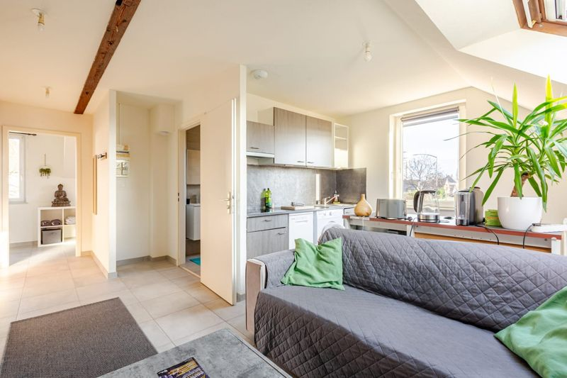
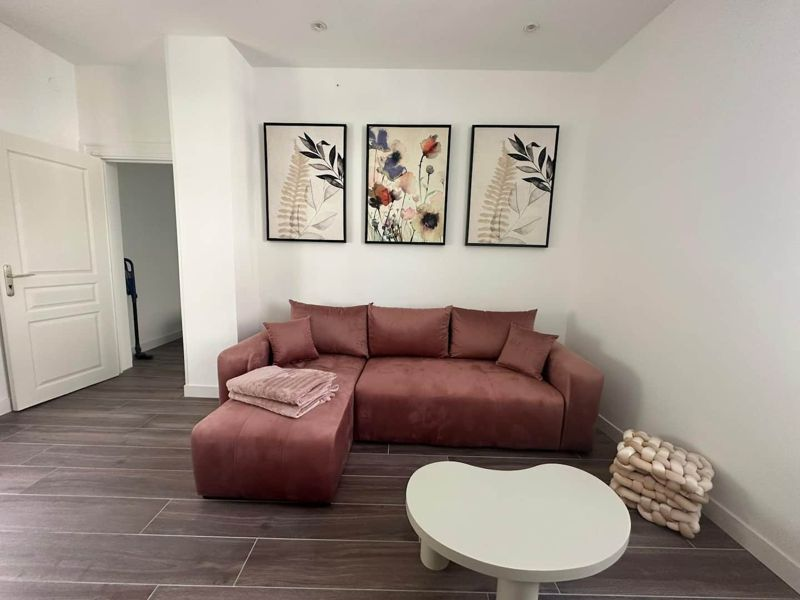

Strasbourg · Colmar · Erstein · Schiltigheim · Illkirch
Des appartements cosy en Alsace
Arrivée 100 % autonome, linge fourni, un hôte qui répond vite.
Cinq adresses, une même exigence
Des intérieurs pensés pour s'y sentir bien, dans les quartiers où l'on a envie de marcher.
Arrivée 100 % autonome, linge fourni, un hôte qui répond vite.
Les logements
Cinq adresses en Alsace

Colmar
Colmar — Petite Venise
Appartement lumineux à 2 pas du centre historique et de la Petite Venise.
Découvrir le logement
Erstein
Erstein — calme et gare
Appartement rénové 40 m² dans une ville calme à 20 min de Strasbourg en train.
Découvrir le logement
Schiltigheim
Le Brasseur
T2 de plain-pied 39 m² à Schiltigheim, à deux pas du Parlement européen et des commerces.
Découvrir le logement
Illkirch-Graffenstaden
Cocon
Appartement design de 120 m² à Illkirch-Graffenstaden, au sud de Strasbourg, tramway direct vers le centre-ville.
Découvrir le logementCe qui ne change pas
Simple, propre, calme.
01
Arrivée autonome
Serrure connectée ou boîte à clés : les codes et le plan d'accès arrivent avant votre venue.
02
Linge fourni
Draps et serviettes dans tous les logements — une serviette par voyageur.
03
Un hôte réactif
Une question, un retard de train ? Une réponse rapide, avant et pendant le séjour.
En relief
Cinq adresses, un seul geste
Laissez défiler, ou glissez pour faire tourner.
Questions fréquentes
Avant de réserver
Comment se passe l'arrivée ?
Arrivée 100 % autonome : serrure connectée Igloohome ou boîte à clés selon le logement. Les codes, photos et instructions sont envoyés avant l'arrivée.
Quelles sont les heures d'arrivée et de départ ?
Elles dépendent du logement : arrivée entre 13 h et 15 h, départ entre 10 h et 11 h. Les horaires exacts sont indiqués sur la page de chaque logement.
Le linge est-il fourni ?
Oui : draps et serviettes fournis dans tous nos logements (1 serviette par voyageur).
Y a-t-il le Wi-Fi ?
Oui, le Wi-Fi est gratuit dans tous nos logements (fibre au Studio Cathédrale, à Colmar et à Erstein).
Y a-t-il une machine à laver ?
Oui au Brasseur et au Cocon, avec un sèche-linge. Pour les autres logements, demandez-nous avant de réserver.
Où peut-on se garer ?
Cela dépend du logement. À Erstein et près du Cocon, le stationnement est gratuit dans les rues. Au Brasseur, la zone bleue devant est payante et des places gratuites se trouvent dans les rues à côté. À Strasbourg, le parking des Bateliers (payant) est à 5 min à pied. À Colmar, la rue est payante du lundi au samedi (gratuit le soir et le dimanche) et un parking gratuit se trouve à 8 min. Le détail est rappelé sur chaque page.
Réservation en direct ou sur Airbnb